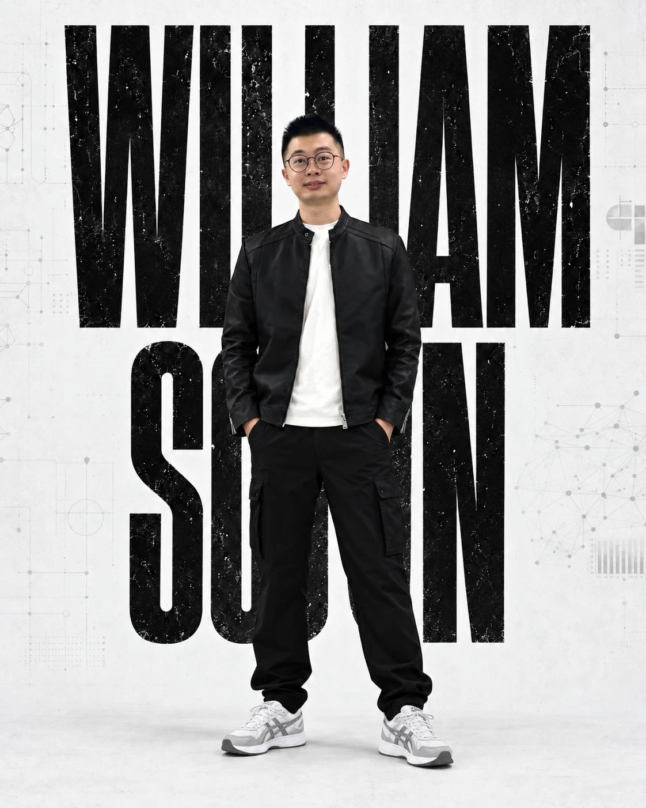
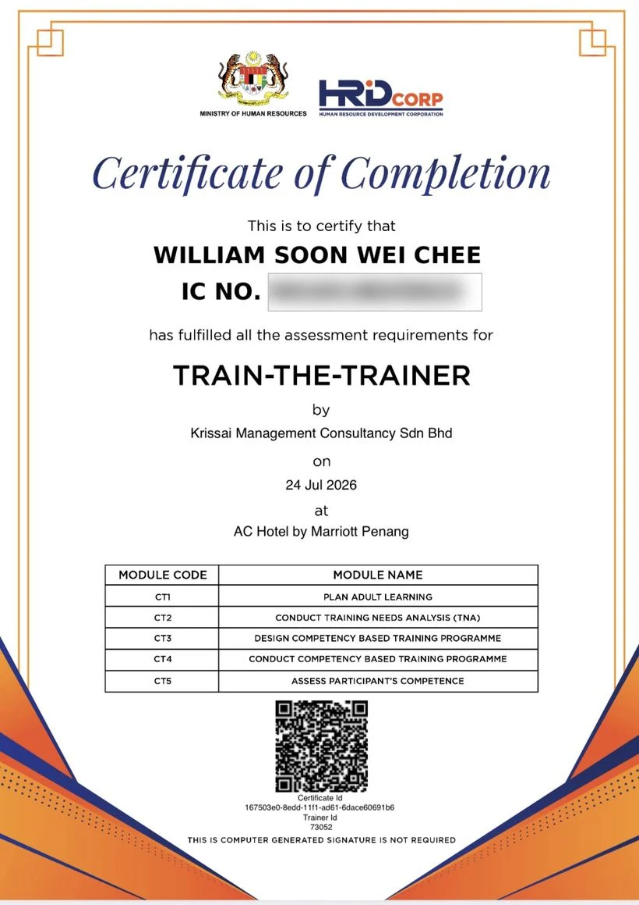
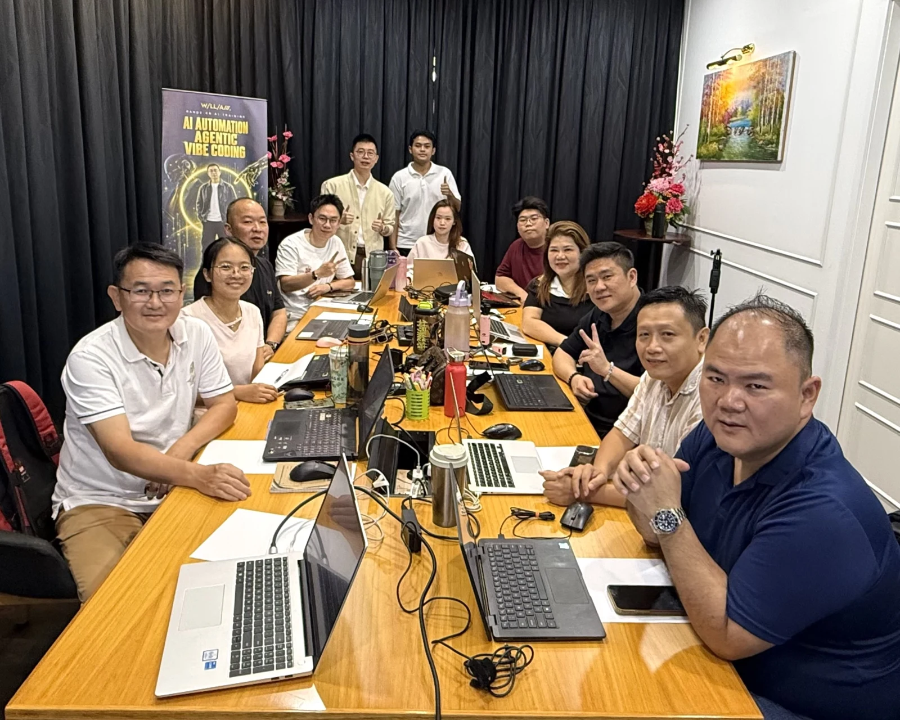
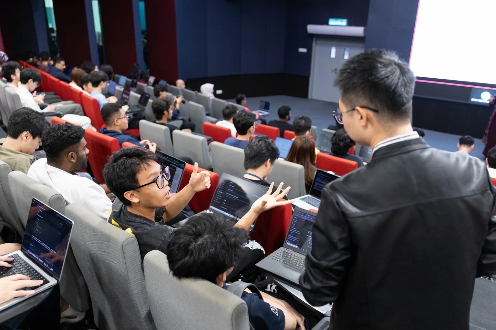
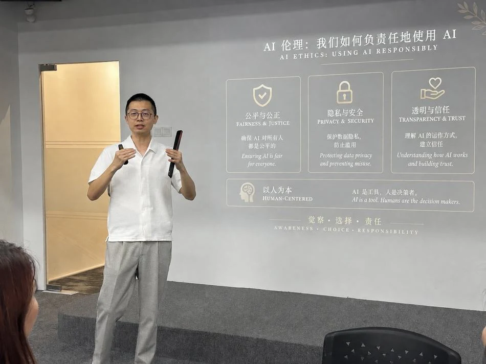
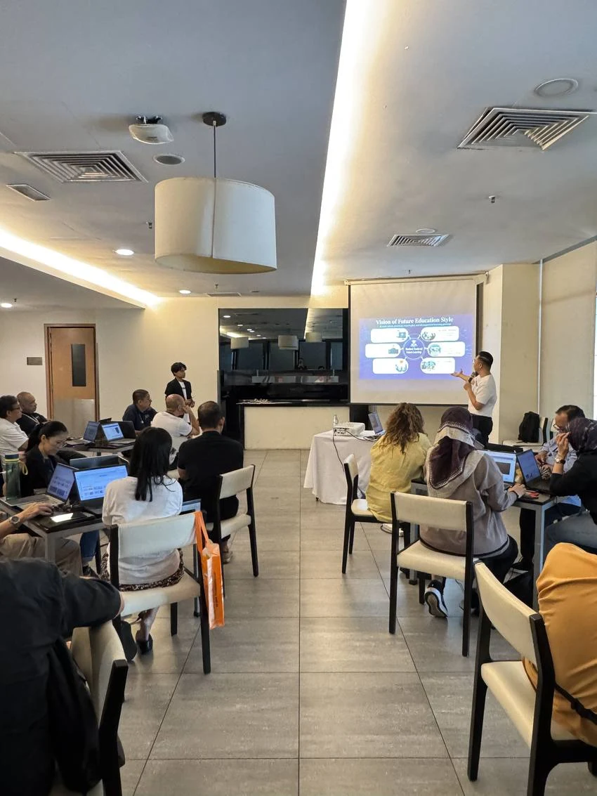
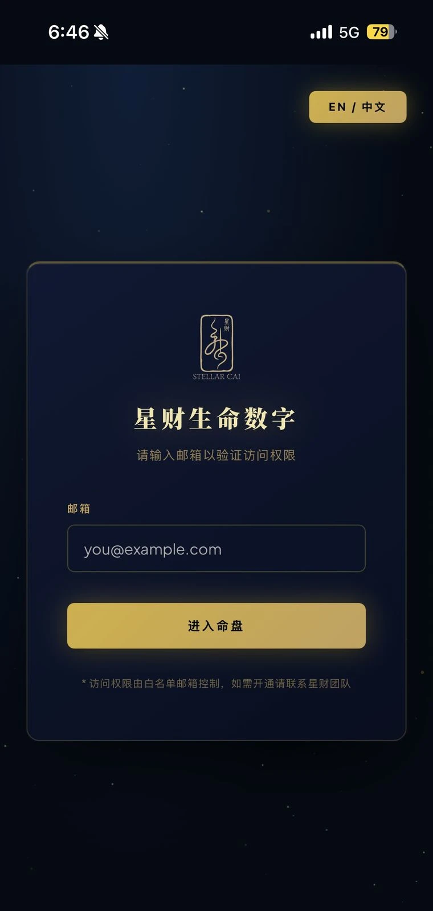
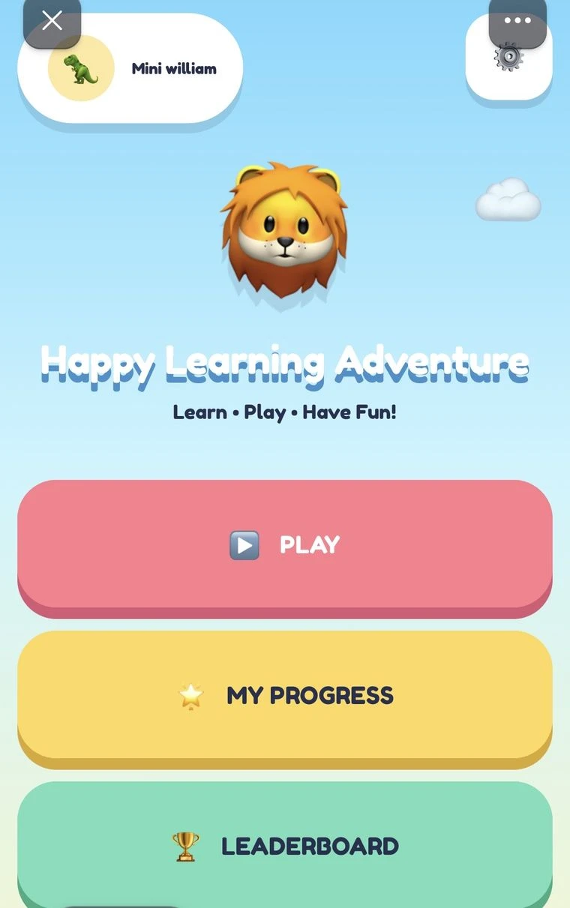

+
Participants trained
Across SME, education, working adult
and youth sessions.
WILLIAM SOON / PRACTICAL AI TRAINING
Less wondering what AI can do.
More making it happen in your business.

REAL PEOPLE. MEASURABLE FEEDBACK.
Business owners. Educators. Working teams.
Practical learning that people can use.
Across SME, education, working adult
and youth sessions.
Anonymous post-session feedback.
02 / THE PERSON BEHIND THE PRACTICE
“I make AI simple, practical
and easy to use.”
I’m William Soon Wei Chee, an entrepreneur and AI trainer. Seven years of building businesses and managing teams taught me that a good tool only matters when it makes the work better.
At VLIONIQ, we start with your everyday challenges. Then we build: a clearer content process, an AI assistant, or a workflow that gives your team time back.
Business experience
Staff managed
A PRACTICAL FOUNDATION

View certificate03 / LEARN IT. BUILD IT. USE IT.
For business owners, working teams
and educators. Built around real tasks.
A guided, one-day workshop for SME owners and managers. Start with a real business task and leave with a working tool you can make your own.

Connect ideas, scripts, characters and storyboards to produce short videos with a clear purpose.
Ask about AI videoExplore practical automation and AI tools through exercises tailored to the work your team does.
Plan a team session04 / IN THE ROOM
Questions welcome. Laptops open.
Learning happens by doing.



SELECTED WORK / BUILT IN THE REAL WORLD
The projects behind the lessons.
Real contexts. Useful applications.

View project screenBuilt and launched a web app for a numerology practitioner, with English and Mandarin experiences and client whitelist access.

View project screenGuided kindergarten teachers to create classroom games with AI, including progress tracking and a leaderboard. Shared practical AI applications with UOW Malaysia KDU faculty.
Introduced AI tools into a food and beverage business to reduce manual work, then trained the team to keep the workflows running independently.
Mapped a confinement care business’s client management process and automated repetitive steps that were taking up the team’s time.
THE CREATIVE SIDE OF AI
A look into William’s AI creative work.
From a visual idea to a moving story.
YOUR NEXT STEP
Tell me what your team does.
Let’s find a useful place to start.